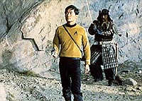
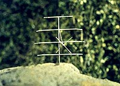
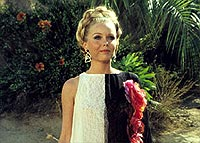
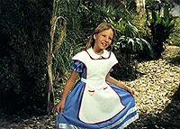
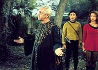
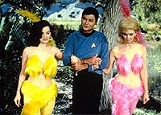
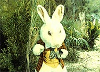

|
MANCHETE
DO EPISDIO
Episdio
audacioso sofre com intensas
revises de ltima hora no roteiro
Episdio
anterior | Prximo episdio Sinopse:
Data Estelar:
3025.3. A Enterprise
entra em rbita de um planeta similar Terra justamente quando sua tripulao
est beira do esgotamento devido carga de servio ininterrupto. Um grupo de
desembarque, do qual o dr. McCoy e o tenente Sulu fazem parte, vai superfcie
para efetuar uma anlise do corpo celeste. O planeta aparenta ser agradvel e
desabitado e recomendado como local perfeito para que o pessoal da Enterprise
possa tirar uma licena e descansar.
 Entretanto,
coisas estranhas comeam a acontecer. Primeiro McCoy v um coelho gigante sendo
seguido por uma menininha loira, tal qual em "Alice no Pas das Maravilhas". McCoy
informa sua descoberta a Kirk, que embora julgue ser apenas um ardil para obrigar
o capito a desembarcar junto com o resto da tripulao, resolve descer e averiguar.
Na superfcie, McCoy mostra a Kirk as pegadas de seu coelho gigante, que
comea a ficar desconfiado, suspendendo as descidas programadas at segunda ordem.
Outros fenmenos ou coincidncias acontecem. Sulu encontra um antigo revolver
em perfeito estado sob uma rocha (alm de a tripulao aparentemente se encontrar
sob algum tipo de vigilncia eletrnica instalada, de origem desconhecida at
aquele momento), Kirk encontra Finnegan, um colega dos tempos de academia que
vivia lhe aprontando peas, a ordenana Barrows (tambm presente no grupo de descida)
supostamente atacada pelo prprio Don Juan, que lhe rasga o uniforme, Kirk encontra
um ex-amor de nome Ruth, isso tudo apesar de todas as pesquisas preliminares informarem
no haver formas de vida animal de nenhuma espcie no planeta.
 Spock
comea a receber leituras do planeta, sinais de que a energia da nave est sendo
drenada, e enfrenta problemas nas comunicaes. Pouco tempo depois o Vulcano desce
superfcie, exatamente quando as comunicaes caem de vez impedindo o contato
com o grupo de descida. Ningum mais pode se transportar para a superfcie devido
perda de energia sofrida.
Os eventos estranhos continuam se sucedendo.
McCoy e Barrows encontram um vestido na floresta, Rodriguez e Angela (tambm presentes
no grupo de descida) so encurralados por um tigre, Sulu atacado por um samurai
e McCoy morto por um cavaleiro medieval. Cavaleiro este que aps ser morto por
Kirk (usando o revlver achado por Sulu, uma vez que os feisers de mo tambm
no mais funcionavam) e analisado por Spock, descobre-se ser artificial. E Angela
e Rodriguez so novamente atacados, s que agora por um caa japons da II Grande
Guerra.
Spock especula que as aparies so provocadas de alguma forma
pelos prprios pensamentos do grupo de descida, e aps a repetio de mais alguns
incidentes, um homem aparece dizendo ser o "Guardio" do local. Ele explica que
todo o planeta uma espcie de parque de diverses para o seu povo e que de fato
ele transforma os pensamentos dos visitantes em realidades atravs dos seus artifcios.
Em seguida, McCoy aparece, vivo e bem acompanhado de duas beldades, aparentemente
sadas de um cassino de Las Vegas, que deixam Barrows toda enciumada (McCoy e
Barrows estavam flertando vontade desde que desceram a superfcie do planeta).
 O
"Guardio" prefere no identificar sua origem a Kirk, mas mesmo assim oferece
as boas-vindas tripulao da Enterprise e as licenas so autorizadas novamente.
Kirk acaba decidindo ficar no planeta e aproveitar a licena ao ver novamente
a rplica de Ruth.
Comentrios:
Mais uma vez a Enterprise encontra um planeta parecido com
a Terra, e, num episdio feito quase que exclusivamente em externas, vemos desta
vez uma verso aliengena de um parque diverses. Neste parque esto presentes
pela primeira vez em Jornada os fundamentos do que viria a ser conhecido
como um holodeck em ao. Entretanto, "Shore Leave" nos mostra um conceito
muito mais baseado em hardware --uma fbrica automtica capaz de responder aos
desejos contidos nos pensamentos dos seus usurios e que efetivamente constri
os modelos que interagem com tais visitantes-- do que o modelo baseado em software
visto em A Nova Gerao, que engana os sentidos bsicos do ser humano.
Esta abordagem mostra o quanto a Srie Clssica de Jornada (sem
falar do pensamento geral da dcada de 1960) estava afastada dos atuais conceitos
da cincia da computao e da realidade virtual.
 (De
toda forma algum tipo de "ajuda" dada pelo planeta --ou pelo roteiro-- s rplicas
criadas, como se pode notar pelas particulares habilidades da rplica de Finnegan.)
O presente segmento tem como nfase a pura e simples diverso. Dentro desse
mistrio aucarado, como bem disse Kirk, difcil encontrar mensagens ocultas
ou segundas intenes, embora elas at existam --mas em momento algum so definitivamente
importantes aqui. A nica inteno divertir a partir de eventos surreais, como
a viso de McCoy de seu coelho gigante, ou ento de passagens humorsticas como
Spock ludibriando Kirk para que este descesse ao planeta mesmo contra a sua vontade.
Muitos dilogos ao longo do episdio vo dando contornos de leveza quase
absoluta ao segmento. Eventualmente esta atmosfera muda como resultado da ocorrncia
de novos eventos misteriosos, mas isso raro e a gravidade de cada situao,
quando existe, desfeita rapidamente, e mesmo o evento mais "terrvel", a morte
de McCoy, acontece quase ao fim do episdio, muito prximo resoluo do mistrio
a fim de garantir que a audincia no fique consternada tempo demais.
 O
episdio navega entre estes conceitos. A leveza --quase totalmente sem compromisso--,
a aventura e o mistrio, indo e vindo entre estas facetas, mas sem se fixar muito
em nenhuma delas, o que contribui muito para criar o clima meio "Frias na Disneylndia"
que vemos entre os tripulantes da Enterprise. Afinal todo mundo meio criana,
no ?
O reflexo deste ditado est implcito em varias passagens,
como quando assistimos Kirk saindo no brao com seu desafeto da Academia (Finnegan)
ou McCoy dando em cima da ordenana Barrows, ou mesmo sendo repreendido por ela
ao fim do episdio. E ainda sentimos tal "clima" quando vemos o capito da Enterprise
e o seu cirurgio-chefe conversando com absoluta informalidade e a relao de
Spock com os conceitos de diverso e descanso "humanos" que so todos momentos
agradveis de "Shore Leave". Sem falar que assistir a um episdio
feito em um ambiente externo sem cenrios de papelo uma rara oportunidade na
Srie Clssica.
(Uma cena de particular memria aquela em que
McCoy "olha no olha" para Barrows trocando de roupa. "No espie", diz ela. "Minha
querida, eu sou um mdico, quando eu espio no cumprimento do dever", retruca
o mdico. Clssico McCoy!)
 O
episdio injeta em sua narrativa diversos elementos (ficcionais ou no) conhecidos
do mundo real (e externos ao universo de Jornada), tais como as conhecidas
histrias de "Don Juan" e "Alice no Pas das Maravilhas", a II Guerra Mundial,
samurais, cavaleiros da Idade Mdia, tigres etc. O que ajuda o espectador a criar
uma certa empatia com o episdio a partir da associao direta a fatos e a elementos
conhecidos. Mas, em contrapartida, no deixa de ser curioso (apesar de plenamente
compreensvel pela data produo da srie e restries oramentrias) notar que
todos os "pensamentos" que no esto relacionados a assuntos particulares so
de memrias da primeira metade do sculo vinte ou anteriores. D at para pensar
que no houve muita coisa importante acontecendo nos sculos 21, 22 e 23.
De qualquer forma, embora possa parecer estranho que algum possa imaginar
ser perseguido por um tigre ou bombardeado, exatamente este o conceito dos modernos
parques de diverso, onde os brinquedos mais procurados so justamente os que
causam um aumento na taxa de adrenalina das pessoas, e pelo menos neste item
"Shore Leave" acerta. A simulao da morte (como a de McCoy no episdio) parece
a ltima fronteira para pessoas que buscam este tipo de divertimento extremo.
No quesito imaginao, Kirk o nico a ter lembranas de cunho totalmente
pessoal nesta aventura surreal, e estas lembranas apontam para um cadete que
sempre teve um interesse forte no sexo oposto (sua viso de Ruth, aparentemente
bem mais velha que ele na poca em que teriam se conhecido), mas que no era um
tipo muito popular na Academia. Primeiro foi Ben Finney ("Court
Martial") que tramou contra ele, e se lembrarmos bem naquele episdio
vrios oficiais que estiveram na Academia com ele no perderam tempo em admitir
que o capito da Enterprise havia sido responsvel pela morte do oficial de registros.
Agora Finnegan, que aparece e que tambm no traz boas lembranas, dando a entender
que o jovem James Kirk no era l muito popular entre seus colegas de turma.
(Em "Where No Man Has Gone Before",
Gary Mitchell diz que o "tenente Kirk" era um instrutor linha dura na Academia,
o que parece apontar para um passado com uma personalidade muito mais rgida do
eu no presente. Algum sem jogo de cintura normalmente um bom alvo para palhaos
como Finnegan.)
"Shore Leave" mostra ainda a indefinio em relao
a Sulu que aqui parece mais cumprir papel de botnico (talvez devido data da
sinopse original de Sturgeon preceder produo da srie --em "Where
No Man Has Gone Before" Sulu era da diviso de cincias da nave--
o que talvez tambm responda pela caracterizao de Kirk como apresentada aqui),
mas com certeza no de piloto da Enterprise como ficaria conhecido pelos fs na
seqncia da Srie Clssica.
 Algumas
cenas so problemticas devido s dificuldade de sua realizao na poca, como
no ataque do avio japons ao casal de tripulantes, quando o uso de um aeromodelo
fica bvio demais para garantir alguma credibilidade. Alis, nesta mesma cena,
enquanto foge do "bombardeio", a oficial Angela cai ao cho logo aps bater de
cara em uma rvore, numa situao cmica forada, e totalmente pastelo (sem contar
que a cena fica no vcuo e o destino da personagem no fechado pelo roteiro).
(A cena de maior "humor involuntrio" que o episdio traz aquele em que
Spock comenta sobre o "cavaleiro medieval", um grotesco e bvio manequim. "Definitivamente
no humano, Jim". Srio? Mesmo? No brinca!)
Muita coisa no presente
segmento pode ser questionada como: Exatamente a que tipo de excesso de servio
a tripulao da Enterprise foi submetida a ponto de precisar parar em um planeta
desconhecido para uma licena (ao invs de procurar uma base estelar prxima)?
Por que os sensores da Enterprise demoraram tanto a detectar algo estranho no
planeta? Por que um povo pacfico e to avanado teria a necessidade de drenar
fora da nave e interferir nas suas comunicaes a ponto de inviabiliz-las (o
que no explicado de forma alguma pelo roteiro)? Por que simplesmente no h
um comit de recepo (ou ao menos um terminal de computador com um tutorial na
superfcie ou em ltima instncia um sinalizador em rbita) que informe a finalidade
do planeta e avise das precaues necessrias aos recm-chegados? O que sem dvida
pouparia muitos inconvenientes.
Porm, o mais bvio problema que mais
uma vez o roteiro desconsidera a existncia de naves auxiliares a bordo da Enterprise
(que j haviam sido introduzidas antes em "The Galileo Seven"), uma
alternativa muito mais lgica para descer ao planeta numa situao de emergncia
do que a pirotecnia que Spock disse ter feito para poder usar o transporte a fim
de descer, ficando ilhado junto com o grupo de superfcie e deixando a Enterprise
tambm sem seu primeiro-oficial, totalmente merc dos eventos at ento imprevisveis
que estavam acontecendo da superfcie enquanto a Enterprise mantinha rbita. Embora
j tivesse sido identificado dreno de energia a bordo muito tempo antes. Spock
j demonstrou vrias vezes que o seu bom senso sempre rende os seus melhores momentos,
o que no foi o caso aqui.
Talvez a melhor definio desta hora
de televiso seja exatamente a que retiramos da premissa do prprio episdio,
ou seja, uma tentativa de afastar da rotina no s a tripulao da USS Enterprise
como o tambm o prprio espectador que junto com os atores se desliga um pouco
da necessidade de salvar o universo, a galxia, ou mesmo a prpria pele, toda
semana.
Definitivamente "Shore Leave" no tem a menor pretenso
de ser levado a srio, apenas de divertir, e nesses termos o episdio at que
funciona bem.
Citaes:
Kirk - "Stardate 3025-point-ahhhh-3."
("Data
estelar 3025-ponto-ahhhh-3.")
Kirk - "The more complex the mind, the
greater the need for the simplicity of play."
("Quanto mais complexa a
mente, maior a necessidade pela simplicidade do jogo.")
McCoy - "A
princess should not be afraid --not with a brave knight to protect her."
("Uma princesa no deveria ter medo --no com um bravo cavaleiro para proteg-la.")
Spock - "On my planet, to rest is to rest --to cease using energy. To
me, it is quite illogical to run up and down on green grass, using energy, instead
of saving it."
("Em meu planeta, descansar descansar --parar de gastar
energia. Para mim, muito ilgico correr para cima e para baixo num gramado verde,
usando energia, em vez de economizando-a.")
McCoy - "I got a personal
grudge against that rabbit, Jim!"
("Eu tenho uma rusga pessoal com aquele
coelho, Jim!")
Trivia:  Theodore Sturgeon (nascido Edward Hamilton Waldo, em 1918, em Nova York), o criador
da histria do episdio, recebeu vrios prmios ao longo de sua carreira como
escritor (ele foi um dos principais escribas da chamada "era de ouro da fico
cientfica"), entre eles o "International Fantasy Award" por sua novela "More
Than Human" (1953) e o Hugo e o Nebula por "Slow Sculpture". Para Jornada,
ele escreveria tambm "Amok Time", da segunda temporada, e "The Joy
Machine", roteiro nunca filmado. "The Joy Machine" foi comercializado pela Pocket
Books em 1996.
Theodore Sturgeon (nascido Edward Hamilton Waldo, em 1918, em Nova York), o criador
da histria do episdio, recebeu vrios prmios ao longo de sua carreira como
escritor (ele foi um dos principais escribas da chamada "era de ouro da fico
cientfica"), entre eles o "International Fantasy Award" por sua novela "More
Than Human" (1953) e o Hugo e o Nebula por "Slow Sculpture". Para Jornada,
ele escreveria tambm "Amok Time", da segunda temporada, e "The Joy
Machine", roteiro nunca filmado. "The Joy Machine" foi comercializado pela Pocket
Books em 1996.
O episdio foi essencialmente rescrito em locao. verdica a histria de que
Gene Roddenberry se sentava calmamente embaixo de uma rvore enquanto refazia
o roteiro, o que acaba transparecendo na desconjuntada histria filmada. "Esse
o nosso episdio 'Ilha da Fantasia'", relata Leonard Nimoy. "Foi escrito por
Theodore Sturgeon, que foi o autor de 'Amok Time', um de nossos episdios mais
poderosos. Na verso original Sturgeon havia criado um planeta em que o pensamento
se manifestava simplesmente porque o planeta tinha, considerando-a insuficientemente
cientfica, e fez uma rescrita de ltimo minuto noite aps noite enquanto estvamos
filmando. Ele estabeleceu a idia de que havia um maquinrio subterrneo extremamente
complexo que produzia a verso fsica do pensamento de uma pessoa, tirando-a do
reino do metafsico e trazendo-o para o cientfico."
A idia original de Sturgeon era anterior a qualquer episdio produzido da srie.
Numa verso preliminar do roteiro, a pesquisa de Sulu revelava que a composio
celular do planeta era uniforme, aparentemente indicando um ambiente artificial.
Tal pesquisa determinava tambm que a rea paradisaca encontrada correspondia
apenas a um pequeno "osis" em um planeta quase todo rido. McCoy tambm enfrentava
um cavaleiro medieval para mostrar me de uma tripulante (que simplesmente "aparecia
na hora") que no havia nada a temer e morre negando a realidade, com Kirk chegando
ao som de uma msica circense ao local (!). Ainda vamos o corpo sem vida de McCoy
ser dragado para o interior do planeta por "garras mecnicas que saam de alapes
que se abriam na superfcie". Os comunicadores parariam de funcionar porque eles
operariam atravs da fora da nave e ela estava comeando a perder energia. Em
um determinado momento a Enterprise seria arrastada para a atmosfera do planeta
e a luz do dia ficaria visvel nas janelas de observao da nave. Kirk ento se
concentraria em descobrir tudo a respeito da situao e o "Guardio" ento se
materializaria em resposta a tal ato. O planeta existiria j por mais de um milnio
e seria completamente automatizado. Com um maior nmero de visitantes do que o
seu projeto suportava de cada vez, o complexo do planeta passaria a drenar energia
da Enterprise para compensar tal diferencial. fcil observar uma melhor estrutura
do que aquela do roteiro filmado, uma virtual zona.
Os produtores ficaram to impressionados com a performance de Bruce Mars como
Finnegan que tentaram mais tarde trazer o personagem "de verdade" para uma participao
especial em um episdio. Embora isto no tenha acontecido, Mars retornou para
uma breve apario como um policial em "Assignment: Earth".
O "tema de Finnegan", composto
por Gerald Fried para o segmento, foi reaproveitado diversas vezes em outros episdios,
notadamente em cenas de alvio cmico. Um claro exemplo na famosa cena em que
Kirk e Spock tm que se livrar de um guarda do passado, no absolutamente clssico
episdio "The City on the Edge of Forever".
A tripulante Angela (Barbara Baldavin) a mesma que perdeu o noivo no episdio
"Balance of Terror". Aqui ela aparece j
curada do trauma de sua perda. Na realidade, somente em cima da hora algum da
produo se lembrou que a atriz tinha vivido a personagem Angela Martine em
"Balance of Terror" e da fizeram a conexo. No roteiro a personagem era
nomeada originalmente como Mary Teller.
O primeiro ano da Srie Animada de Jornada nas Estrelas teve uma
seqncia de "Shore Leave", chamada "Once Upon a Planet",
que foi ao ar em 3 de novembro de 1973. Neste episdio a tripulao da Enterprise
volta ao planeta, onde as suas fantasias acabam se tornando largamente hostis
sem explicao aparente. descoberto ento que o "Guardio" j havia morrido
e o computador central que controlava todo o complexo planetrio comeava a se
ressentir por ser tratado como uma mera ferramenta. Spock d um jeito no computador
enquanto o resto da tripulao tira novamente uma licena maravilhosa.
Parte das locaes de
"Shore Leave" foram usadas tambm para gravar os seguintes episdios da
Srie Clssica: "Arena", "The Alternative Factor"
e "Friday's Child". E vale a pena reparar na formao de rochas durante
a perseguio entre Kirk e Finnegan. O ex-colega do capito em certo momento fica
exatamente no mesmo lugar em que foi filmada a primeira apario de Spock em Vulcano
no incio de "Jornada nas Estrelas IV: A Volta Para Casa".
Ficha
tcnica: Escrito
por Theodore Sturgeon
Direo de Robert Sparr
Exibido
em 29/12/1966
Produo: 17 Elenco:
William Shatner como James Tiberius Kirk
Leonard Nimoy
como Spock
DeForest Kelley como Leonard H. McCoy
Nichelle Nichols como Uhura
George Takei como Hikaru Sulu
Elenco convidado:
Emily Banks como ordenana
Tonia Barrows
Oliver McGowan como o "Guardio"
Perry Lopez
como Rodriguez
Bruce Mars como Finnegan
Barbara Baldavin
como Angela
Marcia Brown como Alice
Sebastian Tom como guerreiro
medieval
Shirley Bonne como Ruth
Episdio
anterior | Prximo episdio
|